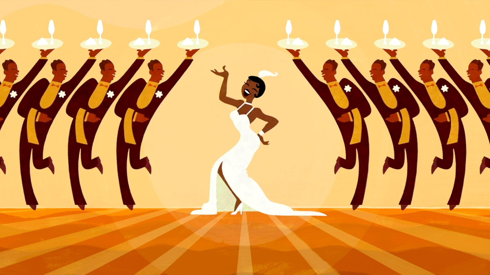

About
With a modern twist on a classic tale, this animated comedy is set in the great city of New Orleans. Featuring a beautiful girl named Tiana, a frog prince who desperately wants to be human again, and a fateful kiss that leads them both on a hilarious adventure through the mystical bayous of Louisiana.
The cast
- Anika Noni Rose as Princess Tiana
- Jennifer Cody as Charlotte La Buff
- Jim Cummings as Ray
- Bruno Campos as Prince Naveen
- Keith David as Dr. Facilier
- Oprah Winfrey as Eudora
- Randy Newman as Cousin Randy
- Michael-Leon Wooley as Louis
- John Goodman as Eli "Big Daddy"
- Jenifer Lewis as Mama Odie

Reviews
When I first heard about The Princess and the Frog, I was very interested in it. The animation looks beautifully done for an adaption to The Frog Prince. I saw the movie while it was still in theaters and I added it as one of the best animated films and probably one of my favorite Disney movies ever made. The setting that takes in New Orleans, Louisiana in the 20's makes sense this is where jazz music starts to have it's popularity back in the old days, and Randy Newman was a great choice for composing the score based on it. The songs are very catchy in this, including Dreams Come True In New Orleans, Almost There, Friends On The Other Sides, and When I'm Human. Anika Noni Rose is amazing as Tiana, Bruno Campos is the Prince Naveen of Maldonia, Jennifer Cody is a super hyperactive best friend, John Goodman is pretty good as the rich father, Jim Cummings does a great cajun firefly named Ray, Jenifer Lewis is fitting as the voodoo queen of the Bayou, and Keith David makes a great voodoo witch doctor. The story is complicated at times, but it's fun to see what's happening.What I like most is that this film resurrected the elements of hand drawn animation, and that's a big return ever since Disney started to have it's downfall with films that not quite memorable. All thanks to Disney Revival.
This is one of the best Disney princess films I have seen thus far. The music, animation, character development, and lessons taught in the movie are truly inspiring and delightful to watch. I can’t believe I didn’t watch this movie when I was younger, it took me a whole two decades to find out about this gem. I truly admire the confidence and determination of Tiana despite the constant doubt from her peers, and the antediluvian sex-role stereotypes.She didn’t let the opinions of others affect her dream and passion to open a restaurant in the heart of New Orleans. This movie teaches the lesson that hard work pays off. Additionally, I also appreciated the friendship that Tiana had with Eudora. It was so sweet at the end when Eudora was shipping Tinana and Prince Naveen after finding out that they were in love with each other despite her wanting to marry a prince. Overall, 10/10 a must watch Disney movie!
She didn’t let the opinions of others affect her dream and passion to open a restaurant in the heart of New Orleans.
This is my absolute favorite Disney movie of all time and is in my top 10 for favorite movies of all time. Tiana is such an amazing and determined character who also has many flaws that make her human. I love this movie for what it teaches about dreams and not always being able to wish on shooting stars. It also has a beautiful message about loving one another for what is on the inside rather than appearance, and the difference between “love” at first sight and loving someone after you have gotten to know them. I feel like all of the characters, but especially Tiana and Naeveen learn a lot about themselves throughout the movie- including realizing that your dreams might not be complete just yet. Tiana is also amazing representation in the Disney franchise. Also- the music is SPOT ON! Far by my favorite of any Disney movie ever (and many broadway soundtracks too)!
Featured Foods
| Gumbo | Beignets |
| Pancakes | Fried Eggs |
| Grits | Waffles |
| Sausage | Bacon |
Thanks for readingReturn to top